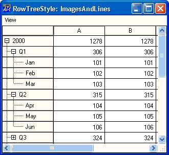
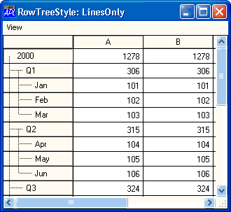
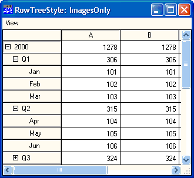
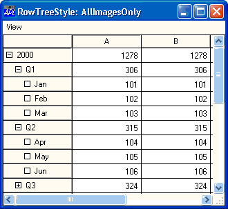
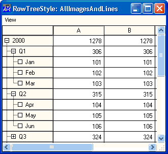

| Applies To: | Grid |
Description
RowTreeStyle specifies the visible attributes of the tree displayed in the Row titles of a Grid.
The value of the RowTreeStyle property is a character vector chosen from the following :
| 'LinesOnly' | Only the lines of the tree structure are drawn. |
| 'ImagesOnly' | Only the images of nodes with children are drawn. |
| 'ImagesAndLines' | Both lines and images for nodes with children are drawn. |
| 'AllImagesOnly' | Images for all nodes are drawn. |
| 'AllImagesAndLines' | Both lines and images for all nodes are drawn. |
The default value, 'ImagesAndLines', is illustrated in the first picture below. Other values are displayed in subsequent pictures.

F.G.RowTreeStyle←'LinesOnly'

f.g.RowTreeStyle←'ImagesOnly'

f.g.RowTreeStyle←'AllImagesOnly'

f.g.RowTreeStyle←'AllImagesAndLines'
